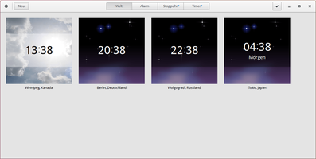

GNOME Uhren
Dieser Artikel wurde für die folgenden Ubuntu-Versionen getestet:
Ubuntu 16.04 Xenial Xerus
Ubuntu 14.04 Trusty Tahr
Zum Verständnis dieses Artikels sind folgende Seiten hilfreich:
Uhren  ist ein Kernprogramm des GNOME-Desktops in Version 3. Die Anwendung übernimmt einfache chronometrische Aufgaben und ist in der Gestaltung an aktuelle Smartphones angelehnt. Das Programm bietet folgende Funktionen: Uhrzeit (für verschiedene Orte), Alarme, Stoppuhr und Timer/Countdown.
ist ein Kernprogramm des GNOME-Desktops in Version 3. Die Anwendung übernimmt einfache chronometrische Aufgaben und ist in der Gestaltung an aktuelle Smartphones angelehnt. Das Programm bietet folgende Funktionen: Uhrzeit (für verschiedene Orte), Alarme, Stoppuhr und Timer/Countdown.
Installation¶
GNOME Uhren kann direkt aus den offiziellen Paketquellen installiert werden [1]:
gnome-clocks (universe)
 mit apturl
mit apturl
Paketliste zum Kopieren:
sudo apt-get install gnome-clocks
sudo aptitude install gnome-clocks
Bedienung¶
Das Programm kann dann sofort gestartet werden [2]. Die Bedienung des Programms ist sehr einfach. Jeder der vier Modi (Uhrzeiten, Alarme, Stoppuhr und Timer) kann über eine Schaltfläche in der Kopfleiste ausgewählt und entsprechend konfiguriert werden.
Uhrzeiten¶
Neben der Standarduhr können weitere Uhren eingerichtet werden, deren Standort unterschiedlich sein darf. Ein Muss für Funkamateure.
|  |
| Standarduhr und drei zusätzliche Weltzeituhren |
Alarme¶
Praktisch, wenn man am Rechner die Zeit vergisst. Leider auch genauso nervig, wenn diese Funktion in einer (Uni-)Bibliothek oder an ähnlichen Orten ausgelöst wird.
| Übersicht |
| Alarm erstellen |
Timer¶
Die Timer-Funktion hat ein maximales Zeitlimit von 99 Stunden, 59 Minuten und 59 Sekunden.
| Laufender Timer |
| Timer starten |
 Übersichtsartikel
Übersichtsartikel- Erstellt mit Inyoka
-
 2004 – 2017 ubuntuusers.de • Einige Rechte vorbehalten
2004 – 2017 ubuntuusers.de • Einige Rechte vorbehalten
Lizenz • Kontakt • Datenschutz • Impressum • Serverstatus -
Serverhousing gespendet von